SF
SF（4選）
Apple TV+がSFに本気で投資していることがわかる4作品。映像・脚本・世界観のどれをとっても映画水準で、「ドラマ版映画」と呼ぶにふさわしい完成度だ。
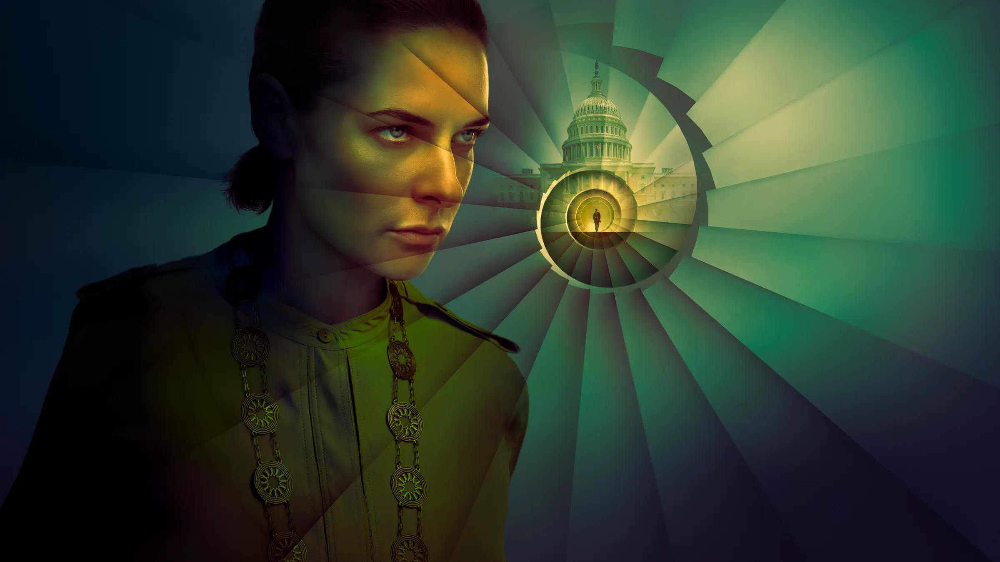
01 ／ SF
サイロ / Silo（2023年〜）
★★★★★
🍅 91%
🍿 93%
SF／ディストピア
地下1万人の閉鎖社会に潜む秘密。ヒュー・ハウイーのベストセラーSF小説を映像化した傑作ディストピアドラマ。
あらすじ
外の世界は有毒で、人類は巨大な地下サイロの中だけで生きている。サイロの中では「外に出たい」と口にすること自体が禁忌とされ、希望者は防護服を着て外に送り出されるが——必ず数分で死ぬ。エンジニアのジュリエット・ニックスはある死の真相を追ううちに、サイロの根幹を揺るがす事実に近づいていく。S2まで配信中。
こんな人に
- 閉鎖空間×謎解きのSFが好き
- 「ハンドメイズ・テイル」や「ウォーキング・デッド」が好きだった
- 世界設定の裏側が徐々に明かされる構成が好き
管理人コメント
1話から「この設定には絶対に秘密がある」という確信を与えてくれる。謎の開示ペースが絶妙で、毎話ごとに「もう1話だけ」が止まらなくなる。S2はスケールアップしながらも世界観の密度を保った。ディストピアSFの中でも最近5年の収穫の一つと断言できる。
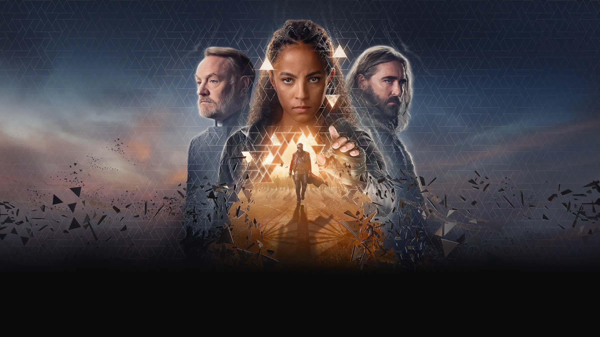
02 ／ SF
ファウンデーション / Foundation（2021年〜）
★★★★☆
🍅 79%
🍿 75%
SF／叙事詩
アイザック・アシモフの「銀河帝国の興亡」を遂に映像化。1万年の未来史をドラマとして描く壮大な叙事詩SF。
あらすじ
数学者ハリ・セルダンは銀河帝国の崩壊を予測し、文明を保存するための計画「ファウンデーション」を立ち上げる。複数の時代・複数の主人公が交差しながら、壮大な歴史の流れを描いていく。原作は1950年代の古典SF小説だが、映像化にあたって女性キャラクターの拡充やストーリーの再構成が行われている。S3まで配信中。
こんな人に
- スケールの大きい宇宙SFが好き
- アシモフの原作ファン（かつ映像化への覚悟がある人）
- 「ゲーム・オブ・スローンズ」のような群像劇SFが好き
管理人コメント
映像のスケール感はドラマの域を超えていて、「これはApple TV+にしか作れない」と思わせる作品。S1は人物紹介と世界観構築に時間をかけるため序盤は重いが、S2以降で急激に面白くなる。原作未読でも問題ないが、1000年単位で物語が進む構成に慣れるまで少し辛抱が必要だ。
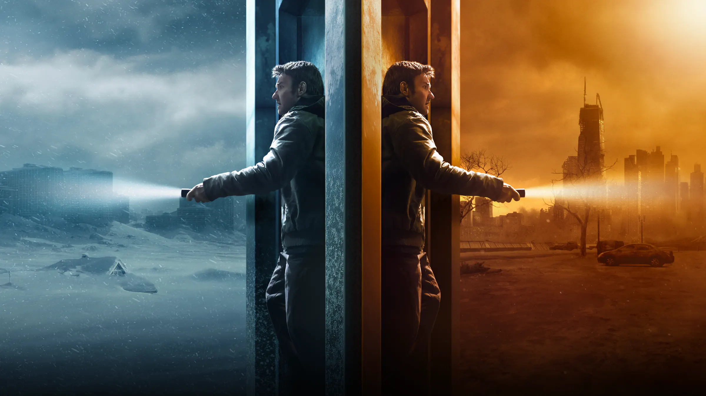
03 ／ SF
ダーク・マター / Dark Matter（2024年）
★★★★☆
🍅 85%
🍿 83%
SF／マルチバース
「自分が歩まなかった別の人生」に拉致される物理学者の逃亡劇。マルチバースを家族の物語として描いた秀作。
あらすじ
シカゴの物理学者ジェイソン・デッセンは、ある夜突然見知らぬ男に拉致され、目覚めると「自分が選ばなかった人生」の世界に放り込まれていた。彼が開発し、別の自分が完成させた装置「量子ボックス」は無数の並行世界への扉を開く。元の家族のもとへ戻るため、無数の世界を渡り歩く全9話。
こんな人に
- 「エブリシング・エブリウェア」のようなマルチバース作品が好き
- 家族・アイデンティティをテーマにしたSFが好き
- 全9話完結のコンパクトなシリーズを探している
管理人コメント
ブレイク・クラウチの原作小説は「読んだら止まらない」系のページターナーで、ドラマ版もそのテンポをうまく再現している。マルチバースの設定を複雑に見せず、「家族を取り戻す」というシンプルな感情の軸で引っ張るのが上手い。中盤以降の展開はかなり想定外で、SF好きに強くすすめたい。
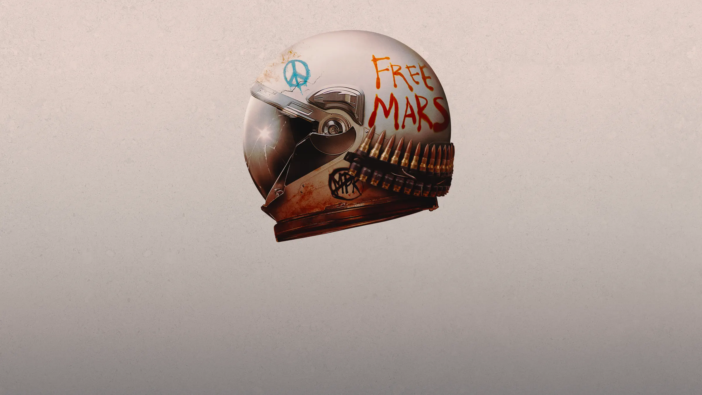
04 ／ SF
フォー・オール・マンカインド / For All Mankind（2019年〜）
★★★★★
🍅 92%
🍿 84%
SF／改変歴史
「もしソ連が先に月面着陸していたら」——宇宙開発競争が続く改変歴史の中で、人間ドラマが静かに積み重なっていく。
あらすじ
1969年、月面着陸競争でソ連が先手を打った世界。アメリカは宇宙開発を加速させ、やがて月に恒久基地を建設していく。各シーズンが約10年ずつ時代を跳ね上がりながら、宇宙飛行士・技術者・その家族たちの人生を丁寧に追う。S4では2003年の火星まで舞台が広がった。
こんな人に
- 宇宙開発×人間ドラマの組み合わせが好き
- 「ライト・スタッフ」「ファースト・マン」のような作品が好き
- シーズンをまたいで登場人物の人生を追う長編が好き
管理人コメント
じわじわと効いてくるタイプのドラマで、気づいたらキャラクターへの愛着が深くなっている。毎シーズンが10年飛ぶという構成上、「あのキャラクターが老いた」「あの人はもう死んでいる」という感情の重みが積み重なっていく。SF好きより人間ドラマ好きにすすめたい宇宙ドラマだ。
サスペンス・スパイ
サスペンス・スパイ（5選）
Apple TV+のサスペンスは、安易などんでん返しに頼らない作品が多い。心理描写・台詞・空気感で引っ張るタイプの5作品。
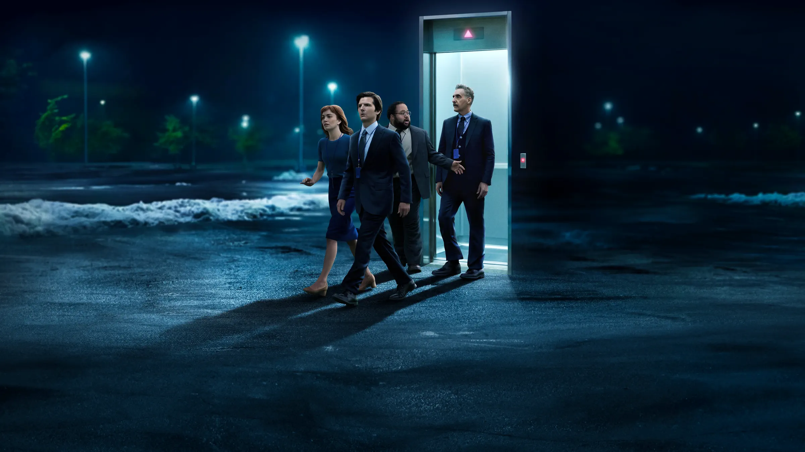
05 ／ サスペンス・スパイ
セヴェランス / Severance（2022年〜）
★★★★★
🍅 97%
🍿 95%
SF／心理スリラー
仕事の記憶と私生活の記憶を手術で完全に切り離す。Apple TV+最高傑作と名高い心理SFスリラー。
あらすじ
大企業ルーモン・インダストリーズは、従業員の脳に「セヴェランス手術」を施す。手術後、「仕事中の自分（イニー）」と「仕事外の自分（アウティー）」の記憶は完全に分離され、互いの存在を知ることができない。マーク・スカウトは職場でふとした異常に気づき始め、会社の秘密を暴こうとするが——イニーとアウティーの協力は可能なのか。S2配信済み。
こんな人に
- 設定の独自性を重視するSF・ミステリー好き
- 「ブラック・ミラー」的な近未来テーマが好き
- 謎を引っ張り続ける構成が得意な視聴者
管理人コメント
「仕事をしている自分」と「家にいる自分」が別人格という設定は、ただのSFギミックではなく、現代の労働と自己同一性への批評として機能している。映像の作り込みが異常で、ルーモン社内の白くて無機質な廊下のデザインがじわじわと不安を積み上げていく。S2終盤の展開はApple TV+史上最も衝撃的な場面の一つだ。
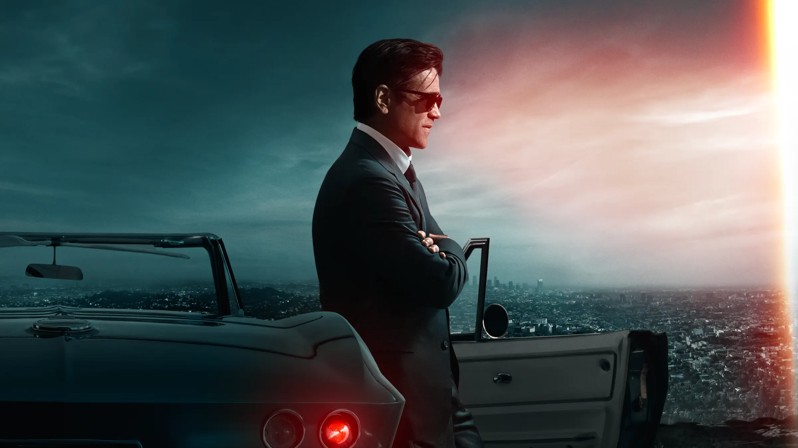
06 ／ サスペンス・スパイ
シュガー / Sugar（2024年）
★★★★☆
🍅 80%
🍿 72%
クライム／ミステリー
コリン・ファレル主演の私立探偵ドラマ。ノワールの雰囲気をまとった静かな男が動くとき、物語は全く別の顔を見せる。
あらすじ
ロサンゼルスを拠点にする私立探偵ジョン・シュガーは、映画界の大物プロデューサーに依頼され、失踪した孫娘を探す。古典ノワールへのオマージュをまとったクライムドラマとして進む物語は、中盤で予想のつかない方向へと一転する。シュガーの正体にまつわる謎が、全8話を通じてじわじわと浮かび上がる。
こんな人に
- コリン・ファレルの演技が好き
- 古典ノワールの雰囲気が好き
- ジャンルの外し方が上手い作品が好き
管理人コメント
中盤の「ジャンルの転換」については好みが分かれるが、「それ込みで成立している」という派だ。コリン・ファレルのシュガーというキャラクターは、静かでいてどこか核心がない独特の存在感があり、謎が深まるほど引き込まれる。LOSANGELESという街の使い方も美しい。
詳しく見る →
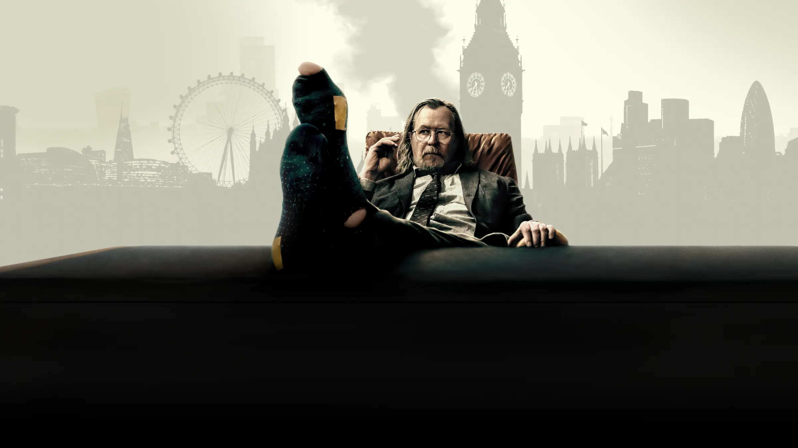
07 ／ サスペンス・スパイ
窓際のスパイ / Slow Horses（2022年〜）
★★★★★
🍅 99%
🍿 91%
スパイ／スリラー
批評家スコア99%。ゲイリー・オールドマン主演。MI5の「はみ出し者部門」が本当に怖い諜報戦に巻き込まれる。
あらすじ
スラウ・ハウスは、ミスを犯したMI5エージェントたちが飛ばされる「閑職部門」。酒びたりで不潔な上司ジャクソン・ラム（ゲイリー・オールドマン）のもと、はみ出し者たちが実際の諜報作戦に巻き込まれていく。各シーズンが独立したエピソードになっており、S5まで配信済み。
こんな人に
- ゲイリー・オールドマンが好き
- 「007」や「ティンカー・テイラー・ソルジャー・スパイ」のような英国諜報ものが好き
- 皮肉とユーモアが混在する会話劇が好き
管理人コメント
99%という批評家スコアは伊達ではない。ゲイリー・オールドマンのジャクソン・ラムというキャラクターは「嫌なやつだけど絶対に信頼できる」という矛盾した存在感で、このシリーズを支えている。スパイドラマとしての緊張感も本物で、毎シーズン最低6時間が消える。Apple TV+を契約するなら、まずこれを観るべきだ。
08 ／ サスペンス・スパイ
ハイジャック / Hijack（2023年）
★★★★☆
🍅 86%
🍿 84%
スリラー／リアルタイム
イドリス・エルバ主演。ハイジャックされた飛行機の中で、乗客一人が孤独に交渉し続ける7時間のリアルタイムスリラー。
あらすじ
ドバイからロンドンへのフライトがハイジャックされる。乗客のサム・نیلソン（イドリス・エルバ）は交渉の専門家であることを武器に、犯人グループと独自の駆け引きを始める。7話・各話が約1時間の構成で、物語はリアルタイムで進行。並行して地上の当局・家族・政治家の動きも描かれる。
こんな人に
- 「24」のようなリアルタイム進行スリラーが好き
- イドリス・エルバが好き
- 全7話でテンポよく観られるコンパクトな作品を探している
管理人コメント
「飛行機内」という閉鎖空間で7時間引っ張れるのか、という疑問は3話目で消える。イドリス・エルバが存在感だけで画面を支配するタイプの俳優であることを改めて思い知らされる。伏線の張り方が丁寧で、終盤の解決に向けてすべてが繋がっていく構成が気持ちいい。7話で完結するので週末一気見に最適。
09 ／ サスペンス・スパイ
推定無罪 / Presumed Innocent（2024年）
★★★★☆
🍅 75%
🍿 82%
法廷／サスペンス
ハリソン・フォード主演。1990年の同名映画のドラマリブート。検察官が同僚の殺人容疑をかけられる法廷サスペンス。
あらすじ
シカゴの検察官ラスティ・サビッチ（ハリソン・フォード）は、同僚の女性検察官の死の容疑者として捜査線上に浮かぶ。被害者との不倫関係、家庭の秘密、法廷での攻防——複数の視点から事件の全体像が少しずつ明かされていく全8話の法廷スリラー。
こんな人に
- 法廷ドラマ・リーガルスリラーが好き
- ハリソン・フォードのシリアスな演技が好き
- 家庭の秘密と職場の陰謀が交差するドラマが好き
管理人コメント
ハリソン・フォードがここ数年で最も抑制の効いた演技をしている。表情と沈黙で感情を語るタイプの役で、ドラマとしての格調が高い。法廷シーンの手堅さは安定していて、終盤の真相開示まで飽きさせない。S2の制作も決定しており、続きが楽しみな作品のひとつ。
ヒューマンドラマ
ヒューマンドラマ（3選）
Apple TV+が静かに力を入れているのがこのジャンル。笑えて泣けて、観終わった後に何かが残る。そんな作品が揃っている。
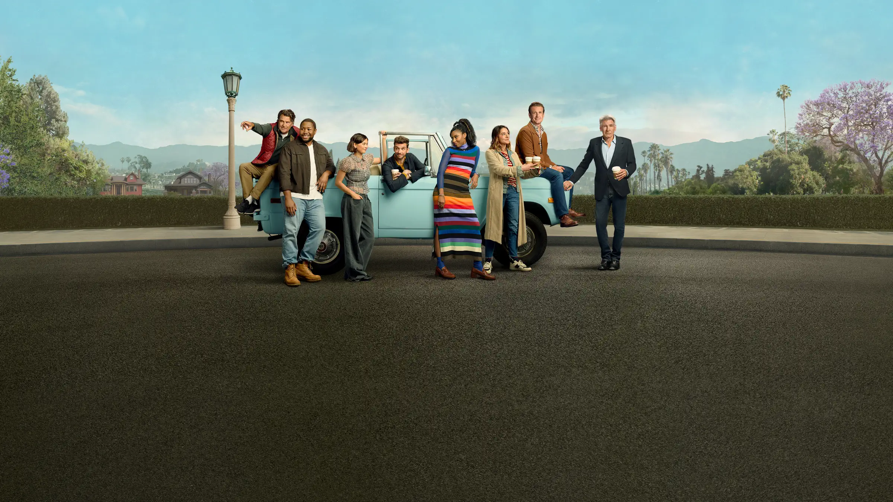
10 ／ ヒューマンドラマ
シュリンキング 悩めるセラピスト / Shrinking（2023年〜）
★★★★★
🍅 89%
🍿 95%
コメディ／ヒューマン
妻を突然亡くした心理士が、教科書を捨てて患者に「本音」で向き合い始める。笑えて泣ける最高の喜劇ドラマ。
あらすじ
心理士のジミー・ラバートは妻の突然死から1年、酒とドラッグで自分を壊しながら娘との関係も崩れていた。あるとき「もうルール通りにやらない」と決意し、患者に対して倫理を無視した「本音」のセラピーを始める。その結果が予想外の形で患者・同僚・自分自身に波紋を広げていく。S2配信済み。
こんな人に
- 「テッド・ラッソ」のような温かいコメディドラマが好き
- 悲しさと笑いが同居する作品が好き
- グループ劇・群像コメディが好き
管理人コメント
第1話から「これは信頼できるドラマだ」とわかる。ジェイソン・シーゲルとハリソン・フォードのバディ関係が絶妙で、特にフォードが「悪態をつきながら優しい老人」を演じる場面は何度も笑わされた。悲しみを正面から描きながらも、後味が温かい。Apple TV+でこれを観ていない人が羨ましい。
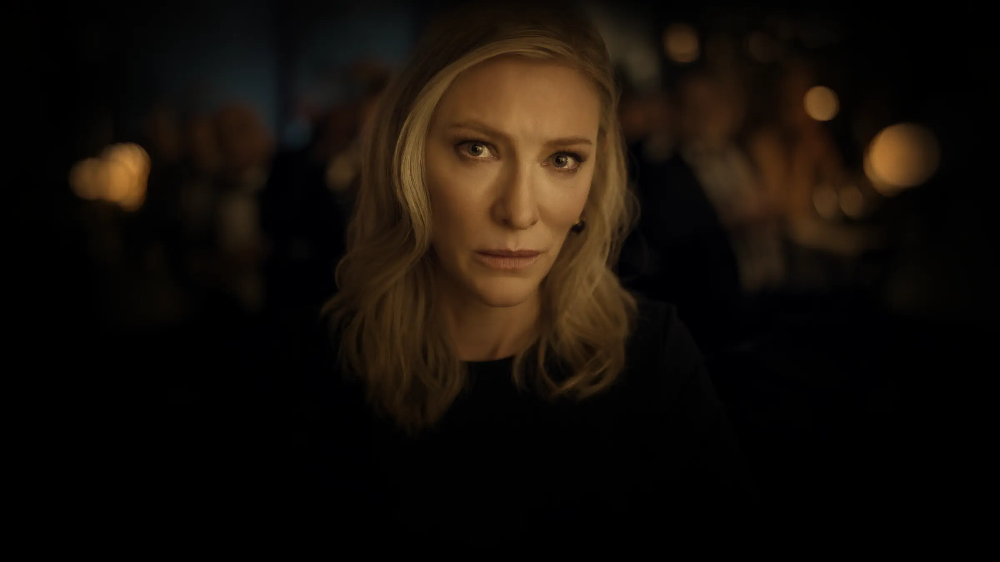
11 ／ ヒューマンドラマ
ディスクレーマー 夏の沈黙 / Disclaimer（2024年）
★★★★☆
🍅 74%
🍿 70%
ヒューマン／ミステリー
ケイト・ブランシェット主演、アルフォンソ・キュアロン監督。一冊の本から明かされる過去の秘密が、現在の家族を解体していく。
あらすじ
著名なドキュメンタリー映像作家キャサリン（ケイト・ブランシェット）のもとに、身に覚えのない小説が届く。その内容は、20年前に起きたある出来事をもとにしていた。並行して語られる老人（ケヴィン・クライン）の視点から、物語はキャサリンの知られざる過去へと踏み込んでいく。全7話。
こんな人に
- ケイト・ブランシェットの演技が好き
- 複数視点×時系列の入り組んだ構成が好き
- 「タール」のような静かに圧力がかかるドラマが好き
管理人コメント
キュアロン監督がテレビドラマとして作ったとは思えない映像密度。各話が映画一本分の重みを持っていて、7時間で完全にこの作品の世界に連れていかれる感覚がある。批評家評価が分かれているが、「記憶と真実」というテーマへの切り込み方はApple TV+の中でも屈指だと思う。
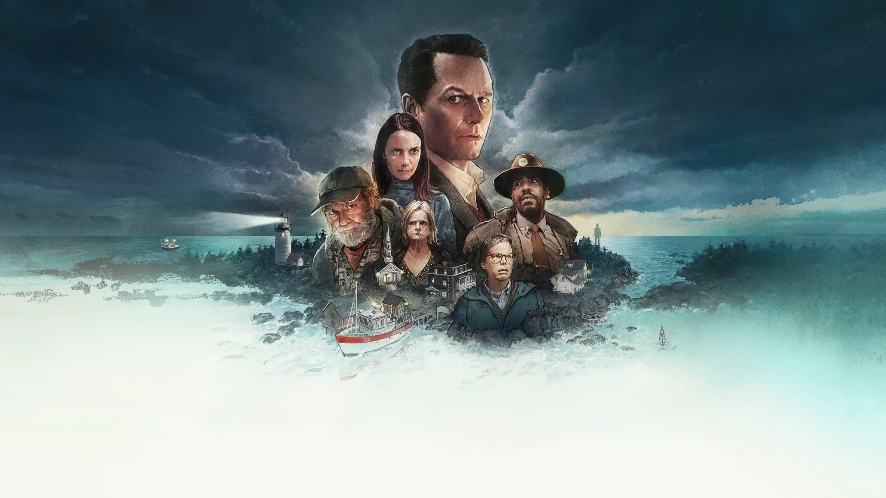
12 ／ ヒューマンドラマ
ウィドウズ・ベイ / Widow's Bay（2024年）
★★★★☆
🍅 88%
ヒューマン／ミステリー
スコットランドの小さな漁村を舞台に、夫を亡くした女たちの繋がりと、静かに波紋を広げる失踪事件が交差する。
あらすじ
スコットランドの海辺の小さな集落、ウィドウズ・ベイ。漁師の夫を海で亡くした女性たちが静かに支え合うコミュニティに、都会から越してきた一人の女性エラが加わる。やがて地元の若者が失踪し、村が長年隠してきた秘密が少しずつ表面に浮かんでくる。閉鎖的なコミュニティと人間の繋がりを丁寧に描いた全6話。
こんな人に
- スコットランド・北欧的な湿った空気感のドラマが好き
- ミステリーよりも人間関係の掘り下げを重視する
- コミュニティの絆と秘密を描く作品が好き
管理人コメント
「ミステリー」というジャンルで括るには人間ドラマの比重が高く、それがこの作品の魅力でもある。村の女性たちが互いに頼り合いながら生きている様子が丁寧に積み上げられていて、後半の「秘密の暴露」に実際のダメージがある。6話という短さが逆に功を奏している。静かな良作。
詳しく見る →
歴史・ドラマ
歴史・ドラマ（1選）
Apple TV+がこのジャンルに本気で挑んだ作品。ハリウッドで長らく描かれてこなかった視点から、歴史の断面を切り取る。
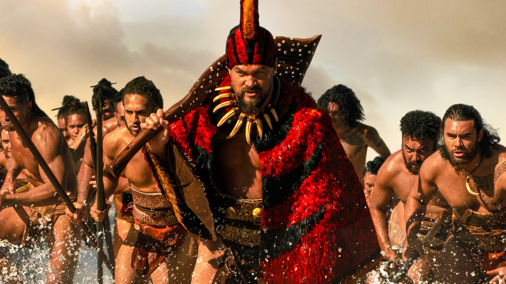
13 ／ 歴史・ドラマ
チーフ・オブ・ウォー / Chief of War（2024年）
★★★★☆
🍅 82%
歴史／戦争ドラマ
ジェイソン・モモア製作・主演。ヨーロッパ人渡来以前のハワイを舞台に、島々の統一をかけた戦いと、滅びゆく文明の記録。
あらすじ
18世紀のハワイ。カメハメハ大王による島々統一の時代を背景に、戦士カマナワの視点から権力・裏切り・愛・信仰が描かれる。ジェイソン・モモアが製作に10年以上を費やした念願のプロジェクトで、ハワイアンの伝統・言語・精神世界を当事者の視点から映像化した意欲作。ハワイ語のセリフが多用される。
こんな人に
- 「ゲーム・オブ・スローンズ」のような権力闘争ドラマが好き
- 西洋目線ではない歴史ドラマを観たい
- ジェイソン・モモアへの熱量ある作品が見たい
管理人コメント
「ゲームオブスローンズ」の影響下にある権力闘争ドラマとして機能しつつ、ハワイという文化・宗教・自然観が独自の空気感を生み出している。モモアの「これを作るために俳優をやってきた」という熱量は映像から伝わってくる。英語字幕でもハワイ語の台詞が多く、その異質さが没入感に繋がる。